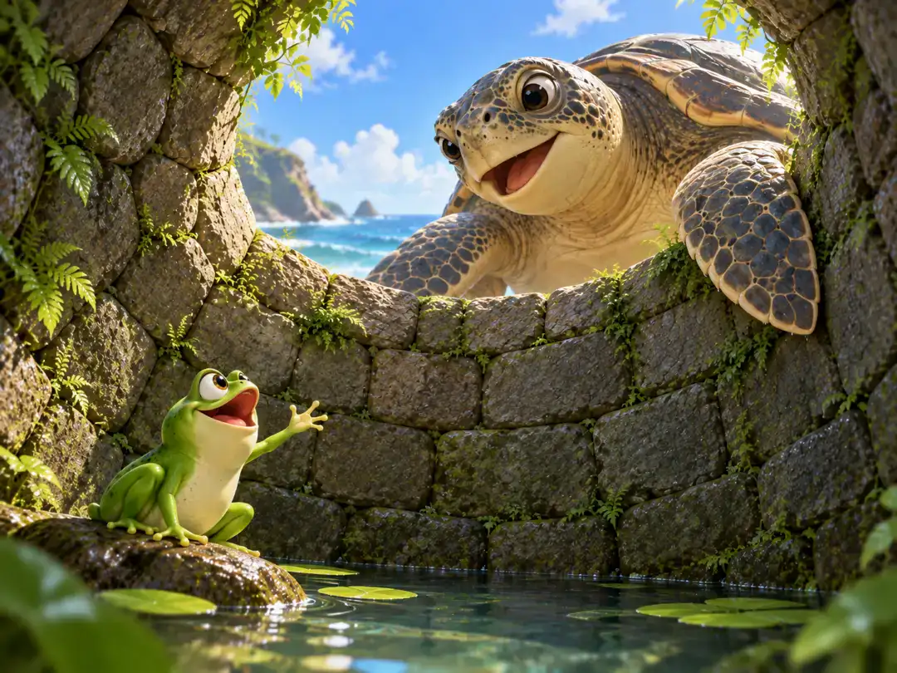

井底之蛙
The Frog in the Well

The giant turtle looks into the well and tells the frog about a sea larger than he can imagine.
从前，有一只青蛙住在一口浅浅的井里。
它非常喜欢自己的家。高兴的时候，它就跳到井沿上蹦蹦跳跳；累了，就靠在井壁的石缝旁休息。天气热了，它扑通一声跳进水里，水刚好托着它的身体。到了井底，它还可以把脚踩进软软的泥里。
井里有小虫、小蟹，还有一群游来游去的蝌蚪。青蛙看看它们，再看看自己的这口井，觉得这里简直没有什么可挑剔的。
一天，一只来自东海的大鳖经过井边。大鳖是一种长得很像乌龟的水生动物。
青蛙看见它，立刻热情地介绍起自己的家：“我这里可快活了！想跳就跳，想游就游，整口井的水都是我的。你怎么不下来看看呢？”
大鳖听了，真的试着往井里走。可是，它的一只脚还没有迈进去，另一条腿就已经被狭窄的井口卡住了。大鳖只好退回来。
接着，它告诉青蛙自己住的地方。
“东海大得几乎望不到边，深得难以量到底。就算许多年里常常发大水，海也不会因此显得满；就算连续许多年干旱，海也不会因此显得空。”
青蛙愣住了。它低头看看自己的小井，又抬头看看眼前这只连井口都挤不进来的大鳖。原来，井外还有一个大得无法想象的世界。
这只青蛙在自己的井里确实过得很快乐。问题并不在于井太小，而在于它一直以为——自己看到的，就是整个世界。
后来，人们用“井底之蛙”来形容一个人见过的东西不多，却以为自己已经知道得很多。
有时候，我们不知道的世界，比我们想象的要大得多。
Long ago, a frog lived in a small, shallow well.
He loved his home. When he felt energetic, he hopped along the rim. When he was tired, he rested beside the cracks in the stone wall. On hot days, he splashed into the cool water. At the bottom, he could sink his feet into the soft mud.
Tiny creatures lived there too—little crabs, insects, and tadpoles swimming through the water. The frog looked around his well and thought he had everything he could possibly want.
One day, a giant turtle from the Eastern Sea came by.
The frog was delighted to have a visitor.
“You should come down!” he said. “It’s wonderful here. I can hop wherever I like, swim whenever I like, and enjoy this whole pool of water. Come see for yourself!”
So the great turtle tried.
But the well was much too small. Before he could even get one foot inside, another part of his leg was already caught against the narrow opening.
The turtle backed away.
Then he told the frog about his own home.
“The Eastern Sea is so wide that you can hardly imagine its size, and so deep that it is difficult to measure. Years of floods do not make it seem full, and years of drought do not make it seem empty.”
The frog stared at him.
He looked down at his little well. Then he looked up at the enormous turtle, who could not even fit through the opening.
For the first time, the frog realized that there was a world beyond his well—a world far larger than anything he had ever imagined.
There was nothing wrong with enjoying his little home. The mistake was believing that his little home was all there was.
That is why the Chinese idiom 井底之蛙 (jǐng dǐ zhī wā)—“a frog at the bottom of a well”—describes someone whose experience is limited but who does not yet realize how much more there is to know.
Sometimes the world beyond what we know is much bigger than we think.